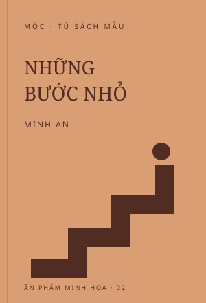
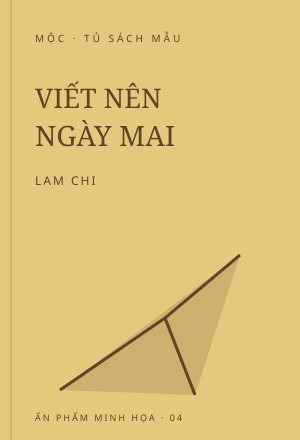

−20%
Chậm lại giữa thế giới vội vàng
96.000đ120.000đTiết kiệm 24.000đ
Xem chi tiếtThu gọn
Một cuốn sách mẫu về cách dành thời gian cho điều quan trọng.
- Hình thức
- Bìa mềm
- Số trang mẫu
- 168
ĐỌC MỘT CHÚT. THẤY MÌNH NHIỀU HƠN.
Gác lại những vội vàng. Tìm một câu chuyện để đồng hành cùng bạn, từ những điều nhỏ nhất.
Khám phá tủ sáchTỦ SÁCH THÁNG 10
Một chút bình yên, một ý tưởng mới, một khởi đầu nhỏ.
Một cuốn sách mẫu về cách dành thời gian cho điều quan trọng.

Những gợi ý mẫu để bắt đầu một thói quen nhỏ và duy trì từng ngày.
Một tựa sách minh họa cho việc tìm lại sự tập trung và bình yên.

Một tập gợi ý sáng tạo mẫu để bắt đầu trang viết đầu tiên.
Chạm vào “Xem chi tiết” để tìm hiểu thêm về cuốn sách bạn thích.
MỘT GỢI Ý NHỎ
Một chút bình yên, một thói quen mới, hay cảm hứng để viết? Hãy đọc tên sách, xem giá và mở phần chi tiết trước khi lựa chọn.
VỀ DỰ ÁN
Mộc dành một góc nhỏ cho những cuốn sách giúp bạn tìm lại cảm hứng, bắt đầu một thói quen hay đơn giản là có một buổi chiều dễ chịu. Xem bài thực hành ↗